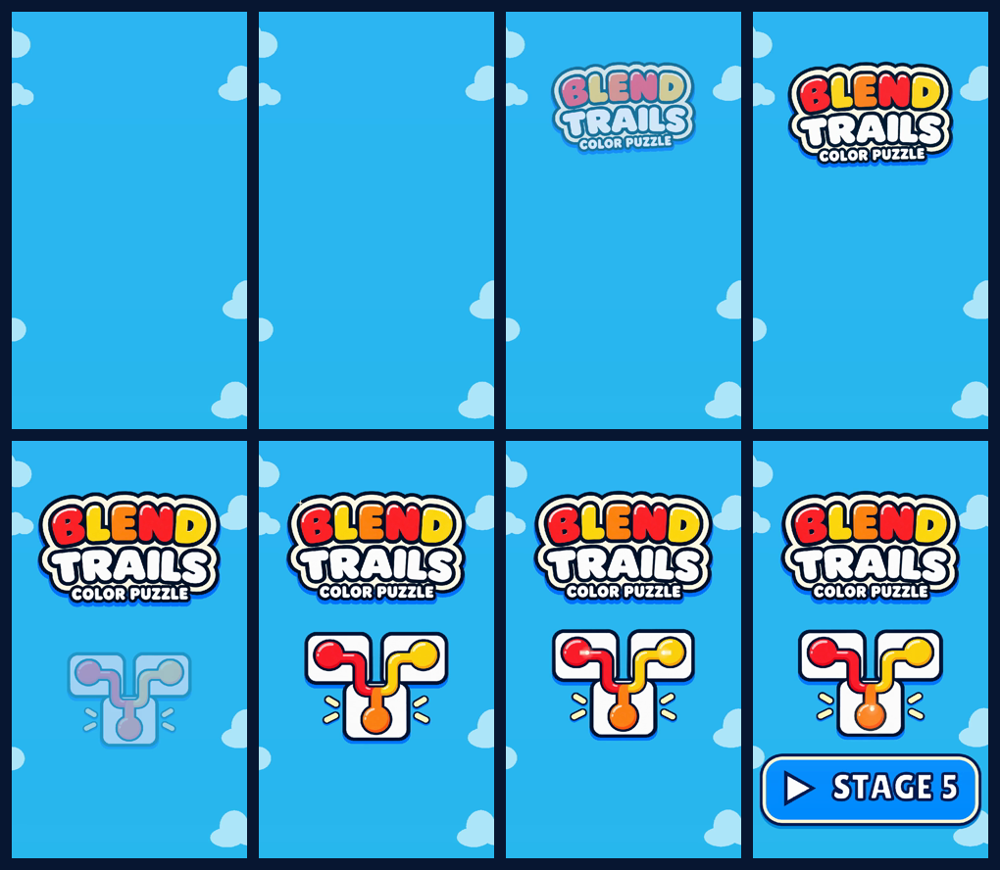

<!doctype html><html lang="ja"><meta charset="utf-8"><meta name="viewport" content="width=device-width,initial-scale=1"><title>タイトルロゴの登場 修正版</title>
<style>*{box-sizing:border-box}body{margin:0;background:#071631;color:#fff6d8;font:15px/1.8 system-ui,"Yu Gothic UI",sans-serif}main{max-width:1040px;margin:auto;padding:28px}h1{font-size:28px;margin:0 0 12px}p{color:#b8cee9}video{display:block;max-height:75vh;max-width:100%;margin:auto;border-radius:12px;aspect-ratio:9/16;background:#2db5f3}.controls{display:flex;gap:12px;flex-wrap:wrap;margin:18px 0}button,a{font:inherit;color:#8bdcff}button{color:#fff6d8;background:#18456b;border:1px solid #3a759b;border-radius:9px;padding:8px 14px;cursor:pointer}img{display:block;max-width:100%;border-radius:10px;margin-top:24px}small{color:#adc5df}</style>
<main><h1>タイトルロゴの登場 修正版</h1><p>最初は空の背景を表示し、ロゴが小さく弾んで登場してから、混色イラストと開始ボタンが続きます。</p><video id="video" controls autoplay loop muted playsinline preload="auto" src="blend-trails-logo-entrance-fixed.mp4" poster="poster.png"></video><div class="controls"><button id="replay">最初から再生</button><button id="speed">0.5倍速で見る</button><a href="blend-trails-logo-entrance-fixed.mp4" download>MP4を保存</a><a href="validation-summary.json">検証結果</a></div><small>6秒 / 720×1280 / 30fps / 音声なし。初回描画前に1.1秒の遅延を入れた、Unityの実画面録画です。</small><a href="logo-entrance-storyboard.png"></a></main><script>const v=document.getElementById('video');document.getElementById('replay').onclick=()=>{v.currentTime=0;v.play()};document.getElementById('speed').onclick=e=>{v.playbackRate=v.playbackRate===1?.5:1;e.target.textContent=v.playbackRate===1?'0.5倍速で見る':'通常速度に戻す'};</script></html>
